הכנה
לפני שמתחילים
חיבור פשוט, שלב אחרי שלב. מי שמעדיף — טכנאי מוסמך.
מנתקים מהחשמל
מוציאים את תקע המקרר מהשקע לפני שמתחילים.
סוגרים את ברז המים הראשי
כך לא יצאו מים בזמן החיבור.
רק מי שתייה קרים
מחברים רק לקו מי שתייה קרים. חיבור לקו מים חמים עלול לגרום לתקלה.
בקופסה
מה בערכה
ערכת החיבור מגיעה יחד עם המקרר. אלה החלקים שבה:
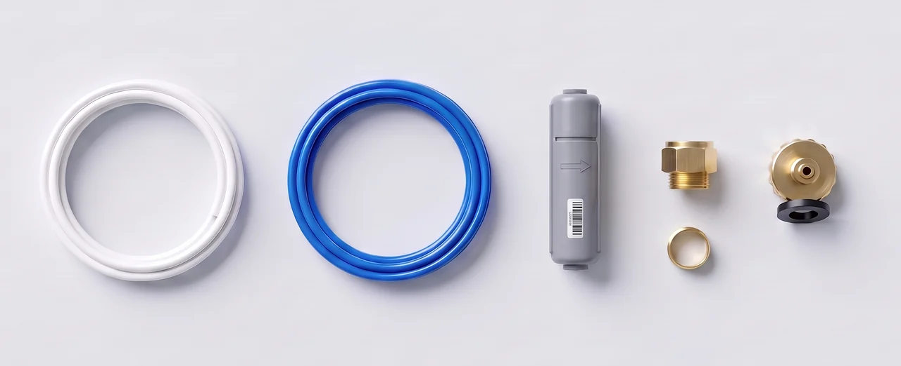
-
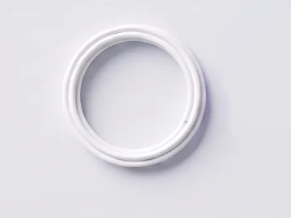
צינור לבן
מהברז אל השסתום
מתחבר למתאם שעל הברז.
-
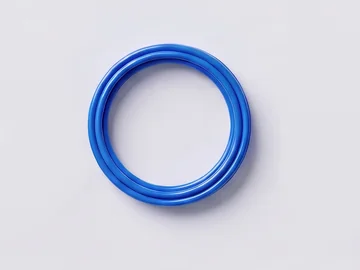
צינור כחול
מהשסתום אל המקרר
נדחף עד הסוף לקו המים של המקרר, בלי רווח.
-
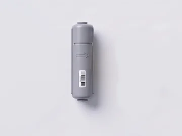
שסתום אל-חזור
עם חץ שמצביע לכיוון המקרר
לא מקבעים אותו על גוף המקרר.
-
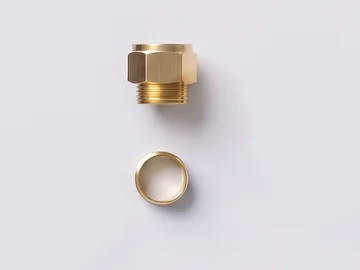
אום דחיסה
אום פליז, בקצה הצינור הכחול
מהדקים היטב, אבל לא יותר מדי.
-
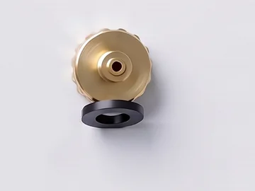
מתאם לברז
מתאם פליז עם אטם גומי
מבריגים אותו על ברז מי השתייה הקרים.
משתמשים רק בערכה החדשה שמגיעה עם המקרר, לא בצינור ישן.
ההתקנה
שלב אחרי שלב
החיבור לאספקת המים
-
שלב 1 מתוך 8
מבריגים את המתאם על הברז
מבריגים את מתאם הפליז על ברז מי השתייה הקרים.
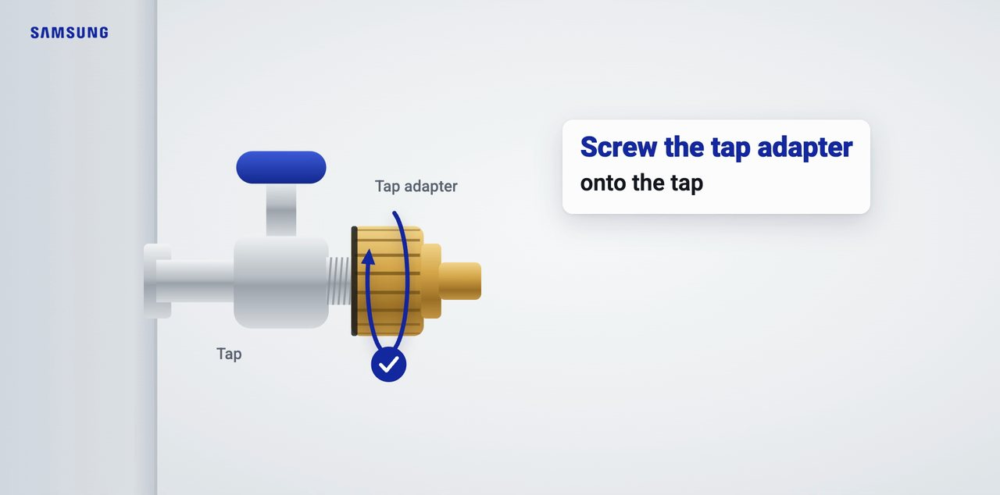
-
שלב 2 מתוך 8
צינור לבן ← שסתום ← צינור כחול
מחברים את הצינור הלבן למתאם, ואחריו את שסתום האל-חזור. מהשסתום ממשיך הצינור הכחול אל המקרר.
שימו לב: החץ על השסתום מצביע לכיוון המקרר.
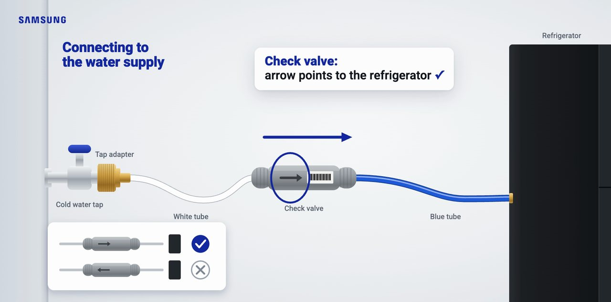
-
שלב 3 מתוך 8
בלי כיפופים חדים
מעבירים את הצינור בלי כיפופים חדים, ולא מקבעים את השסתום על גוף המקרר.
אם מזיזים את המקרר אחרי החיבור, מוודאים שאזור החיבור של הצינור נשאר ישר.
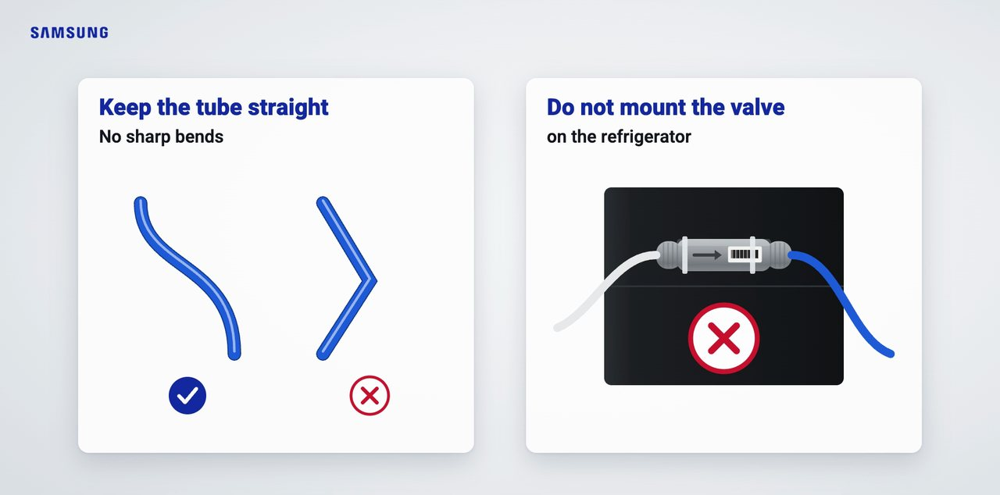
החיבור למקרר
-
שלב 4 מתוך 8
מאחורי המקרר: מסירים את המכסה ומשחררים את האום
נקודת החיבור נמצאת בגב המקרר, בצד ימין (במבט מאחור), בגובה של כ-75 ס״מ. מסירים את המכסה, ואז משחררים ומסירים את אום הדחיסה מקו המים של המקרר.
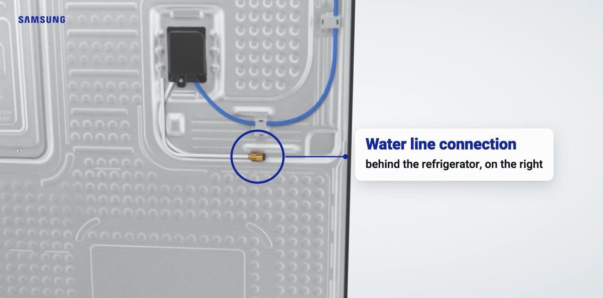
1איפה: בגב המקרר, בצד ימין 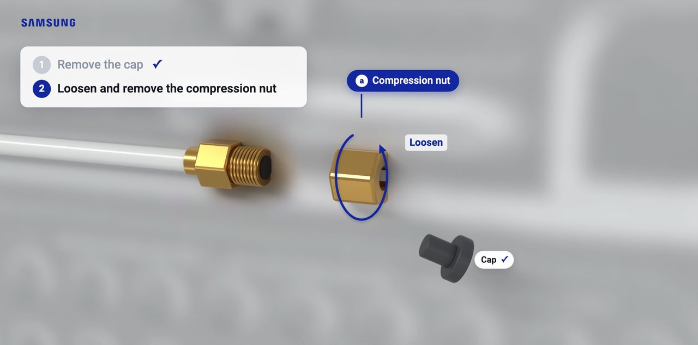
2מסירים מכסה, משחררים אום -
שלב 5 מתוך 8
משחילים ודוחפים עד הסוף
משחילים את האום על הצינור הכחול, ודוחפים את הצינור פנימה לקו המים של המקרר עד הסוף.
בלי רווח בין הצינור לחיבור.
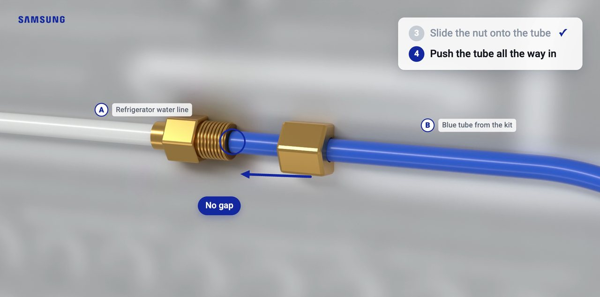
-
שלב 6 מתוך 8
מהדקים את האום
מהדקים את אום הדחיסה היטב, אבל לא יותר מדי.
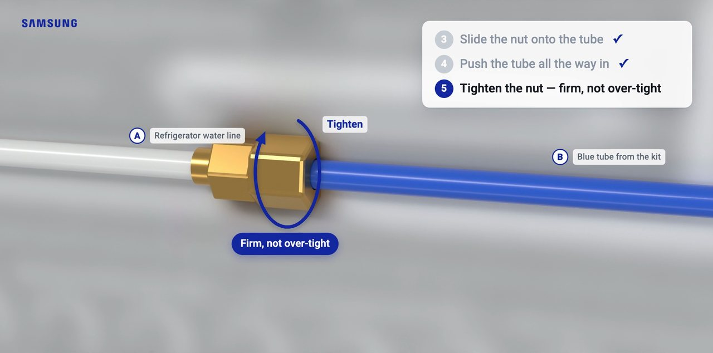
בדיקה ושטיפה
-
שלב 7 מתוך 8
פותחים את הברז ובודקים נזילות
פותחים את ברז המים הראשי בהדרגה, ובודקים שאין נזילות בשני החיבורים: ליד הברז ובגב המקרר.
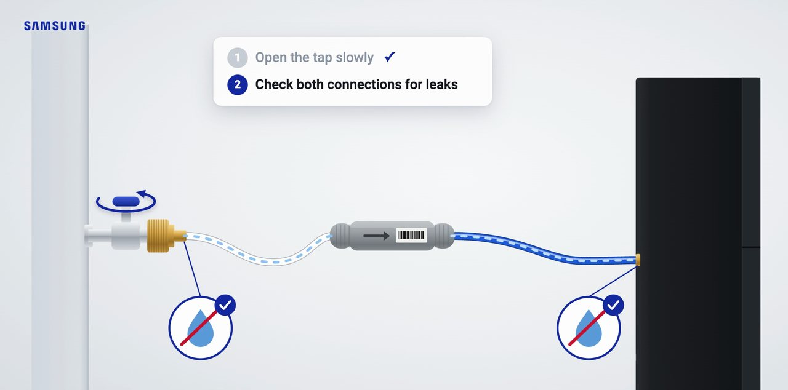
-
שלב 8 מתוך 8
שוטפים כ-3 ליטר לפני השימוש הראשון
מחברים את המקרר בחזרה לחשמל, ומזרימים כ-3 ליטר מים מהמתקן שבתוך הדלת, כדי לנקות את המערכת.
המים הראשונים מגיעים אחרי כמה שניות. זה אוויר בצינור, וזה תקין.
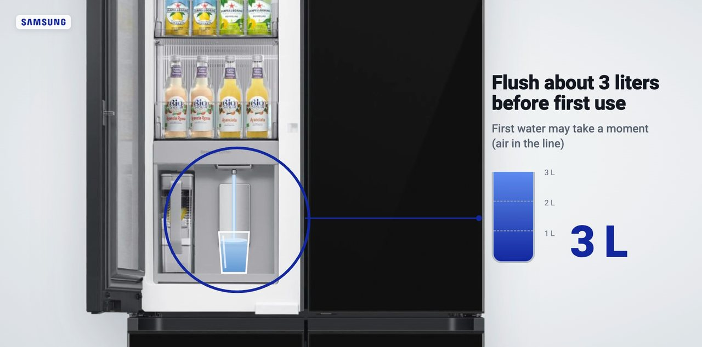
זהו.
המקרר מחובר, ואפשר ליהנות ממים וקרח.
אם משהו לא עובד
פתרון תקלות קצר
אין מים אחרי 3 דקות?
בודקים שברז המים הראשי פתוח, ושהמקרר מחובר לחשמל.
יש טפטוף באחד החיבורים?
בודקים שהאום מהודק היטב, אבל לא מהדקים יתר על המידה. אם הנזילה לא נפסקת, סוגרים את ברז המים הראשי ופונים לשירות.
איך יודעים שהזרימה תקינה?
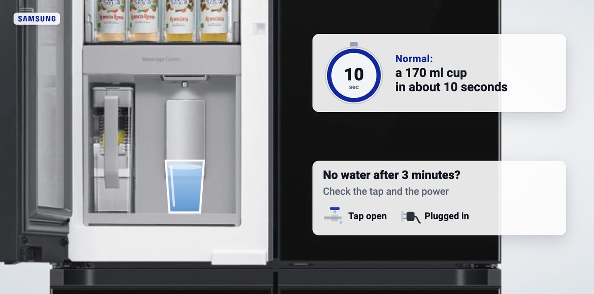
חוברת ההדרכה המלאה
כל ההוראות והאזהרות של היצרן לדגם הזה. חיבור קו המים מופיע בעמודים 42–43.
ההדרכה בדף הזה מבוססת על הוראות היצרן. בכל מקרה של ספק, ההוראות בחוברת ההדרכה של Samsung קובעות. התקנת קו המים אינה מכוסה באחריות המקרר.